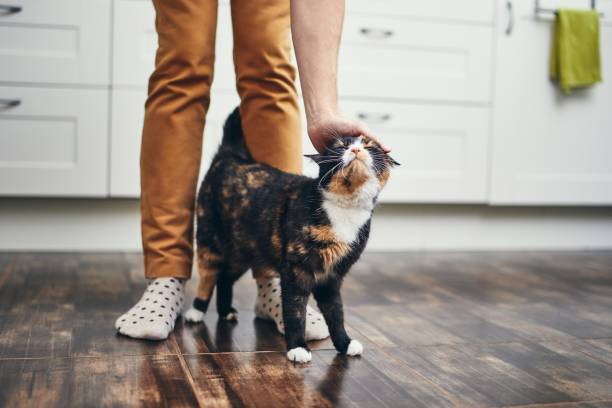
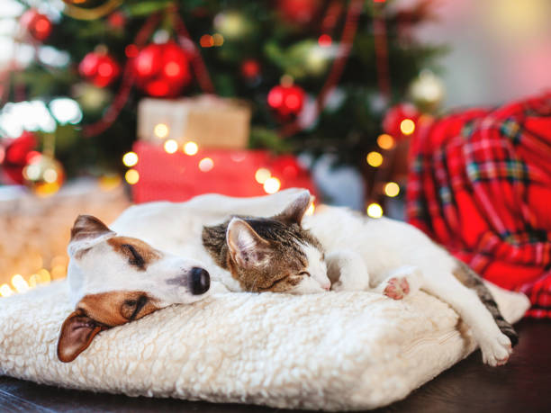

Adopta a tu proximo compañero

Nal
Nal tiene 2 años y 7 meses, es energetico y feliz, es ideal para salir a correr a la plaza junto con el.
Adoptar
Gardfield
Gardfield tiene 2 años y es un gato loco, es imperactivo y jugeton, si en casa falta esa energia juvenil, con Garfield va a sobrar!
Adoptar

Dogi
Dogi tiene 6 meses, siendo cariñoso, energetico, protector y compañero, sin duda es una buena compañia para el día a día.
Adoptar

Yin y Yang
Yin tiene 2 años y es un perro muy tranquilo.
Yan tiene 3 años y es un gato muy jugeton y sumiso.
Siendo los 2 "Hermanos" desde hace un año, son inseparables y muy compañeros!